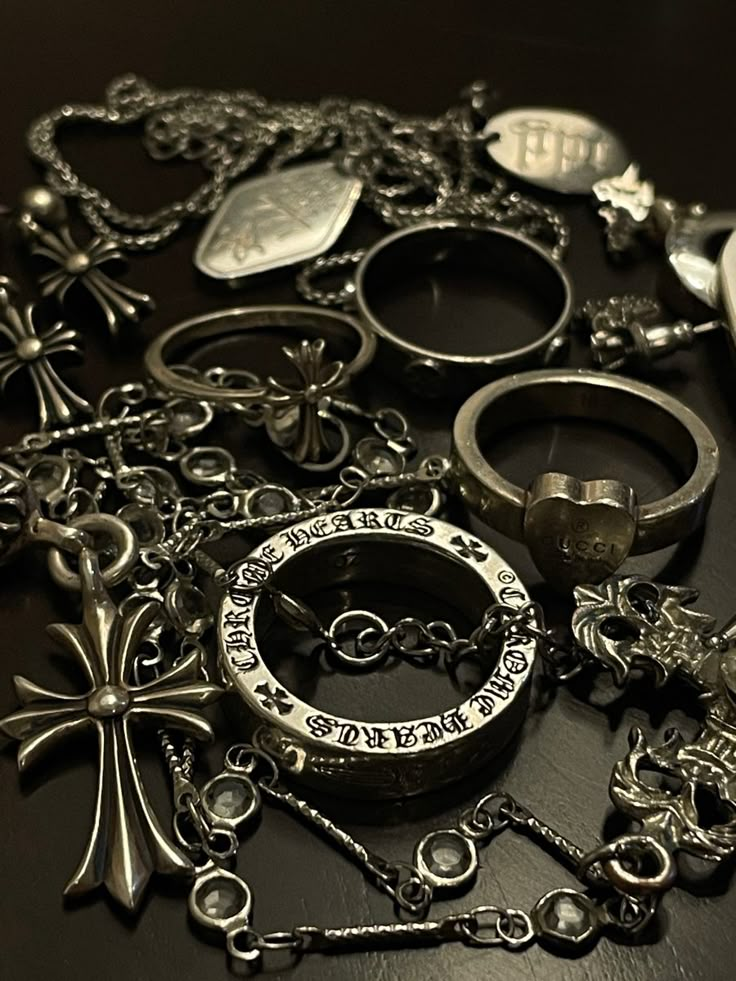
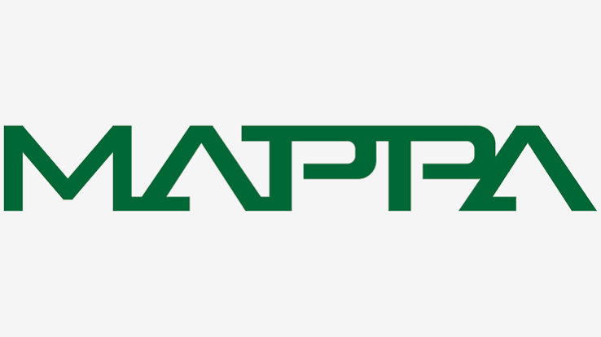
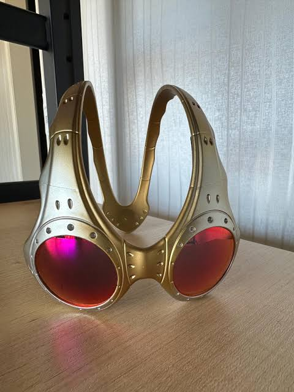

I really love Chrome Hearts jewelry. They make silver, gothic-style jewelry with various notable symbols such as crosses, daggers, and horseshoes. They are seen more as a fashion brand, as they've risen in pop culture, but I like their jewelry. What inspires me about it is how it looks clean but not super polished. It looks like lost treasure that I can collect. The type of font they use for their lettering gives off an old vibe too that also makes it seem like lost treasure. The crosses, as well as other symbols they use, look super cool to me, as it's not your typical cross. They have the craftsmanship of an old house that brings back something we've lost in the modern ages. Chrome Hearts Instagram

I really like the animation studio MAPPA. They animate many anime from Japan, such as JJK, AOT, Chainsaw Man, and many others. They are known for their amazing animators who bring manga alive with there amzing animation, colors, and direction. What inspires me about them is the choreography of the animation and how it doesn't just look like a picture moving their is actual attention to detail in it. Mappa website

I also like Oakley glasses. Oakley is known for their glasses and athletic wear. What I really like is how their glasses curve and the round shape of them. It gives a futuristic look to them while also being very stylish. Oakley's Instagram
I kinda got ahead of myself. What I was supposed to do for this assignment I thought I was supposed to do for the alt text assignment. I didn't have access to the module so showing how to add images so I had to figure it out on my own. AI is very helpful for gaining information on how to do something like add images and also showing you the error in your code. I did not use it to write the code though. Overall I really enjoyed the proccess of figuring it out on my own. Im excited to learn more.